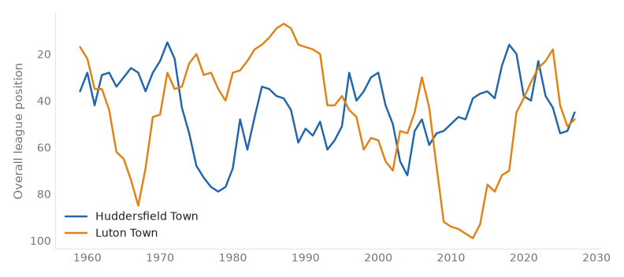
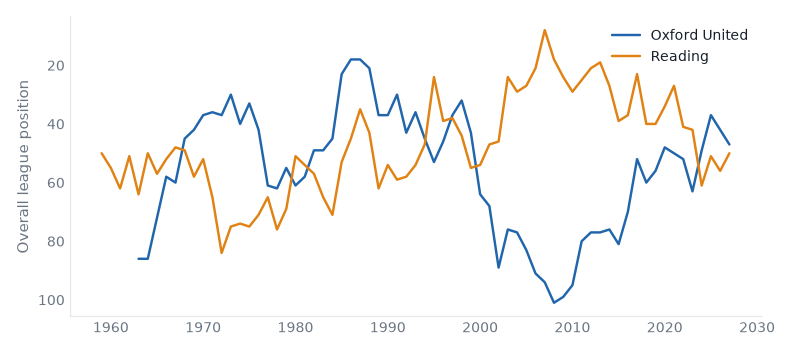

League One, League Two and the National League, 03 November to 09 November 2026. 4 results.Friday's preview.
Huddersfield 1–1 Luton compare
League One, Tue 03 Nov
Huddersfield Town have 29 points from 14 games, their best start since 2011/12.

Oxford 2–0 Reading compare
League One, Wed 04 Nov
Oxford United beat Reading for the first time since 1999/00.

| Tue 03 | Huddersfield | 1–1 | Luton | compare | best start since 2011/12 | |
| Tue 03 | Wigan | 0–0 | Mansfield | compare | worst start since 2020/21 | |
| Wed 04 | Oxford | 2–0 | Reading | compare | first win v Reading since 1999/00 |
| P | W | D | L | GD | Pts | ||
|---|---|---|---|---|---|---|---|
| 1 | Huddersfield Town | 7 | 4 | 2 | 1 | +7 | 14 |
| 2 | Plymouth Argyle | 7 | 4 | 1 | 2 | +1 | 13 |
| 3 | Bradford City | 7 | 3 | 3 | 1 | +1 | 12 |
| 4 | Stockport County | 7 | 3 | 2 | 2 | +5 | 11 |
| 5 | Oxford United | 6 | 3 | 2 | 1 | +4 | 11 |
| 6 | Luton Town | 7 | 3 | 1 | 3 | +1 | 10 |
| 7 | Cambridge United | 7 | 2 | 4 | 1 | -1 | 10 |
| 8 | Sheffield Wednesday | 6 | 3 | 1 | 2 | -1 | 10 |
| 9 | Leicester City | 6 | 2 | 3 | 1 | +4 | 9 |
| 10 | Wycombe Wanderers | 6 | 2 | 3 | 1 | -2 | 9 |
| 11 | Leyton Orient | 6 | 2 | 2 | 2 | +5 | 8 |
| 12 | Mansfield Town | 7 | 2 | 2 | 3 | -1 | 8 |
| 13 | Burton Albion | 7 | 2 | 1 | 4 | -5 | 7 |
| 14 | Stevenage | 6 | 1 | 3 | 2 | +1 | 6 |
| 15 | Reading | 7 | 1 | 3 | 3 | 0 | 6 |
| 16 | Notts County | 6 | 1 | 3 | 2 | -2 | 6 |
| 17 | MK Dons | 6 | 1 | 3 | 2 | -3 | 6 |
| 18 | Peterborough United | 7 | 1 | 2 | 4 | -8 | 5 |
| 19 | Barnsley | 6 | 1 | 1 | 4 | -5 | 4 |
| 20 | Blackpool | 6 | 1 | 1 | 4 | -5 | 4 |
| 21 | Doncaster Rovers | 7 | 1 | 1 | 5 | -8 | 4 |
| 22 | Bromley | 7 | 1 | 1 | 5 | -10 | 4 |
| 23 | AFC Wimbledon | 7 | 1 | 1 | 5 | -11 | 4 |
| 24 | Wigan Athletic | 7 | 0 | 1 | 6 | -8 | 1 |
| Tue 03 | Northampton | 0–1 | Oldham | compare | first win v Northampton Town since 2017/18 |
| P | W | D | L | GD | Pts | ||
|---|---|---|---|---|---|---|---|
| 1 | Salford City | 7 | 4 | 1 | 2 | +5 | 13 |
| 2 | Barnet | 6 | 3 | 3 | 0 | +5 | 12 |
| 3 | Walsall | 7 | 2 | 5 | 0 | +5 | 11 |
| 4 | Gillingham | 7 | 3 | 2 | 2 | +2 | 11 |
| 5 | Crewe Alexandra | 7 | 2 | 3 | 2 | -4 | 9 |
| 6 | Shrewsbury Town | 7 | 2 | 2 | 3 | -5 | 8 |
| 7 | Grimsby Town | 7 | 1 | 4 | 2 | +1 | 7 |
| 8 | Crawley Town | 6 | 2 | 1 | 3 | -2 | 7 |
| 9 | Tranmere Rovers | 7 | 1 | 4 | 2 | -3 | 7 |
| 10 | Chesterfield | 7 | 2 | 1 | 4 | -4 | 7 |
| 11 | Accrington Stanley | 7 | 1 | 3 | 3 | +1 | 6 |
| 12 | Northampton Town | 6 | 1 | 3 | 2 | -1 | 6 |
| 13 | Fleetwood Town | 7 | 1 | 2 | 4 | -5 | 5 |
| 14 | Cheltenham Town | 7 | 1 | 2 | 4 | -6 | 5 |
| 15 | Rochdale | 7 | 1 | 2 | 4 | -6 | 5 |
| 16 | Oldham Athletic | 7 | 1 | 2 | 4 | -7 | 5 |
| 17 | Swindon Town | 7 | 1 | 2 | 4 | -7 | 5 |
| 18 | Exeter City | 7 | 1 | 1 | 5 | -4 | 4 |
| 19 | Rotherham United | 7 | 1 | 1 | 5 | -5 | 4 |
| 20 | Newport County | 7 | 0 | 3 | 4 | -5 | 3 |
| 21 | Colchester United | 7 | 0 | 3 | 4 | -7 | 3 |
| 22 | York City | 7 | 0 | 3 | 4 | -8 | 3 |
| 23 | Bristol Rovers | 7 | 1 | 0 | 6 | -9 | 3 |
| 24 | Port Vale | 6 | 0 | 1 | 5 | -9 | 1 |
No results on file.
| P | W | D | L | GD | Pts | ||
|---|---|---|---|---|---|---|---|
| 1 | Boreham Wood | 8 | 7 | 1 | 0 | +13 | 22 |
| 2 | Southend United | 9 | 4 | 4 | 1 | +9 | 16 |
| 3 | AFC Fylde | 8 | 5 | 0 | 3 | +1 | 15 |
| 4 | Yeovil Town | 8 | 4 | 2 | 2 | +6 | 14 |
| 5 | Carlisle United | 8 | 4 | 2 | 2 | +5 | 14 |
| 6 | Worthing | 7 | 4 | 2 | 1 | +4 | 14 |
| 7 | Woking | 8 | 4 | 1 | 3 | +3 | 13 |
| 8 | Harrogate Town | 8 | 4 | 1 | 3 | -2 | 13 |
| 9 | Barrow | 8 | 3 | 3 | 2 | +1 | 12 |
| 10 | Altrincham | 8 | 4 | 0 | 4 | -4 | 12 |
| 11 | Wealdstone | 8 | 3 | 2 | 3 | +2 | 11 |
| 12 | Sutton United | 8 | 3 | 2 | 3 | 0 | 11 |
| 13 | Kidderminster Harriers | 8 | 2 | 3 | 3 | -1 | 9 |
| 14 | Forest Green Rovers | 5 | 2 | 2 | 1 | 0 | 8 |
| 15 | Aldershot Town | 8 | 2 | 2 | 4 | -4 | 8 |
| 16 | Boston United | 7 | 2 | 2 | 3 | -5 | 8 |
| 17 | FC Halifax Town | 7 | 2 | 1 | 4 | -1 | 7 |
| 18 | Solihull Moors | 7 | 2 | 1 | 4 | -10 | 7 |
| 19 | Hartlepool United | 9 | 2 | 0 | 7 | -8 | 6 |
| 20 | Hornchurch | 9 | 2 | 0 | 7 | -14 | 6 |
| 21 | Eastleigh | 8 | 1 | 1 | 6 | -9 | 4 |
| 22 | Tamworth | 7 | 1 | 1 | 5 | -11 | 4 |
| 23 | Scunthorpe United | 9 | 1 | 0 | 8 | -12 | 3 |
| 24 | Gateshead | 9 | 0 | 0 | 9 | -19 | 0 |
Built from the English football database, tiers 1–5 from 1958/59. Results from football-data.co.uk. Archived copy.